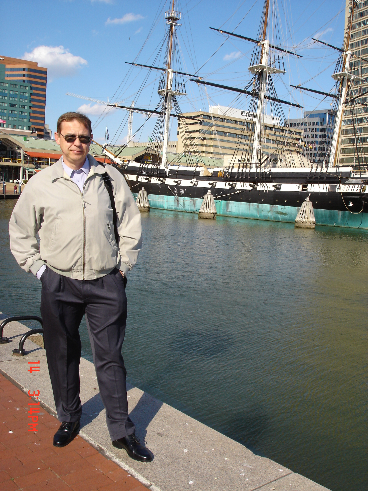

|
Dr. Vladimir Gavrilenko, PhD, DSc,
Associate Research Professor
|
Center for Materials
Research
Room: MCAR-515
Phone: 823-8052
Fax: 823-9054
E-mail:
vgavrilenko@nsu.edu
|
 |
|
Professional
Preparation |
Dr. Sc.
(Doctor of Science), Advanced doctoral
degree equivalent to habilitation in Europe,
'Electronic Band Structure and Optics of
Solid Surfaces and Interfaces. Ab initio
Modeling and Experiments' Academy of
Science, Kiev, Ukraine, 1990
PhD, 'Electro-Optics
of Semiconductor Surfaces and Interfaces.'
Institute of Semiconductors, Academy of
Science, Kiev, Ukraine.
MS,
National University of Kiev, Ukraine.
Physics and Chemistry of Semiconductors. |
|
Research
Experience |
Computational material science, quantum
chemistry, nano-structured materials,
quantum confined systems, physics and
chemistry of surfaces and interfaces,
large-scale computations, molecular
dynamics, magneto-optics, non-linear optics
(second harmonic generation, electro-optics)
|
|
Industrial
Experience |
Development
of contact-less diagnostics for chemical
reactions on solid surfaces for
semiconductor industry. |
|
Synergetic
Activity |
NSF panel
member, Division of material science
Member
of the European Transnational Panel in Nano-science
Referral
of Physical Review B, Physical Review
Letters, and Physics Letters A
Member
of American Chemical Society, American
Physical Society (APS, life member) and of
Materials Research Society (MRS) |
|
Awards |
Outstanding
Research Mentor, NSU 2006, 2007, Max-Planck
Fellowship (Germany, 1993), Alexander
von Humboldt Fellowship Awards (1987, 1991) |
|
Teaching
Involvements |
Graduate course in
Materials Science, Electronic and Photonic
Materials, (MATS-535).
Spring
PhD course:
Introduction to Computational Materials
Science, (MSE-609).
Fall
Undergraduate course
in Advanced Lab of General Physics (PHY-399).
Spring
Supervision of student
research in Quantum Chemistry and
Computational Materials Science |
|
Auxiliary materials
for my students |
Basics of Materials Optics,
Diatomic Molecule,
MATS-535,
MSE-609, computational materials stuff,
useful tips for success in University
(for students and stuff) |
Publications:
more than 100 publications in
scientific journals and conference proceedings, 1
patent, 2 books, 4 book chapters
Recently
funded proposals:
Co-PI
NSF-CREST-Supplement ‘Computational Photonic
Metamaterials and Nonlinear Ultra-fast Optics’.
(NSF Proposal Number 0520208): $100K, 2005 – 2006
Co-PI, NSF NCN
EEC-0228390, subcontract to Purdue University ‘Development
of nanoHUB resources for educational and research
purposes’: $100K, started in 09/2006
(current) |